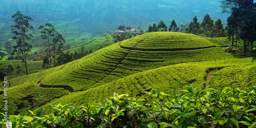

Weather
Loading current weather...
- Temperature
- Conditions
- Wind
- Wind Chill
Data
- Administrative Capital
- Sri Jayawardenepura Kotte
- Largest City
- Colombo
- Official Languages
- Sinhala and Tamil
- Currency
- Sri Lankan rupee (LKR)
- Area
- 65,610 km²

Loading current weather...